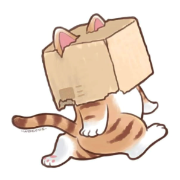
box on its head, tail upwanders in, box lifts on card 2
Hi. I'm your sidekick.
I'll sit with you when things get too much. And I'll help you notice the good days.
3 cards. The panda wanders in with a box on its head and lifts it to say hello, which sets the tone before a single word about anxiety.
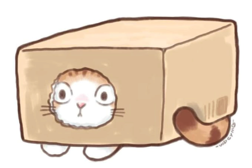
peeking out, listeningdoesn’t come out yet
What brings you here?
Pick any. It just helps us know what to show you first.
Multi-select, all optional — no question is required to reach Home. The panda watches from inside the box rather than facing the user, so answering feels less like an interview.
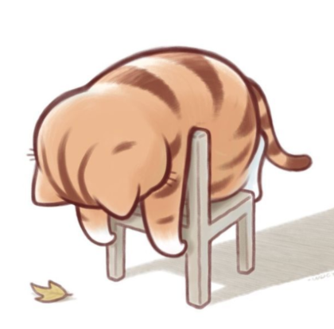
draped over the stool, waiting it outno persuasion pose
Want a nudge once a day?
Just one a day. You can turn it off whenever you want.
Yes leads to a time wheel with Morning / Evening presets. No goes straight to Home and is never re-asked. The panda is slumped over a stool waiting rather than looking eager, so declining costs nothing.
All three Home frames now follow the Moss & cream screens: full-bleed scene panel, one CTA, the Meditate / Play pair, then real list cards, and a five-slot tab bar with the panic FAB centred. Journal is gone, Me is new. Other screens below still show the old four-item bar and have not had a hi-fi pass.
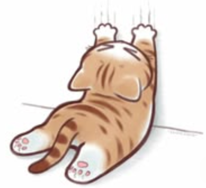
You're doing better than you think.
Nothing to pick up yet. Try one of these:
Scene panel is full-bleed and owns the status bar; the character, the line and one CTA all sit inside it. No date, no Settings link — Settings moved to the Me tab. No streak and no empty progress bars: two dashed invitations that disappear once done.
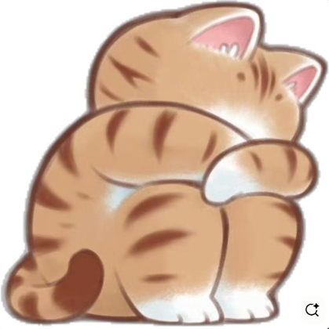
I get anxious too. We can get through this together.
Same frame once there's history: the invitations are replaced by real cards, resume first. One character line per session, fixed while the user reads it. The line is the panda's voice, so the CTA under it carries the affordance.
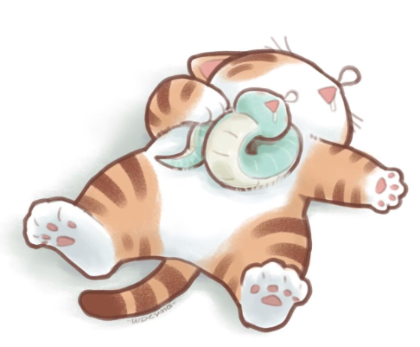
Some days I feel like keeling over too. Let's just sit down.
Same frame, a different line: solidarity by being visibly worse off, which lands better than encouragement when a user opens the app already flattened. Drawn at random on open, no repeats until the set is exhausted. It never asks for anything — the CTA is still the only route in.
A · "You're doing better than you think."
B · "I get anxious too. We can get through this together."
C · "Some days I feel like keeling over too. Let's just sit down."
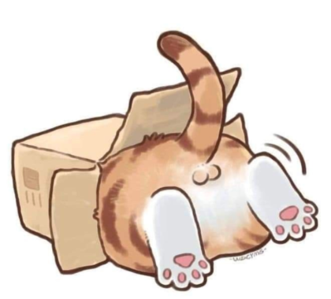
D · "Hiding is a valid plan. I'll be in here if you need me."
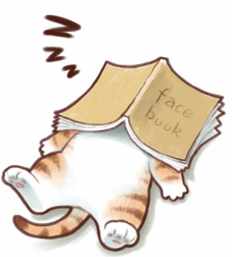
E · "Doing nothing still counts. Ask me how I know."
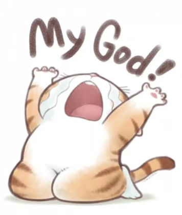
F · "Sometimes you just need to yell about it. I'll go first."
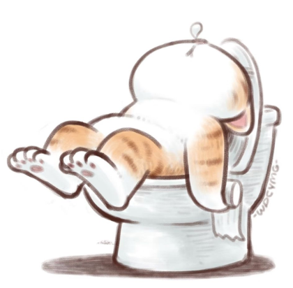
G · "It never comes at a good time, does it. It still passes."
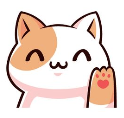
H · "Nothing's wrong right now. Let it be boring."
A new pairing on every open of the app — fixed for that session, so nothing changes while the user is reading, and no repeats until the set is used. Image and line are written together — the joke is always the panda being in a worse state than the user, never the user being told to cheer up. Every pairing keeps the same "tap when you need me" pill underneath, so the way in never moves.
How are you feeling?
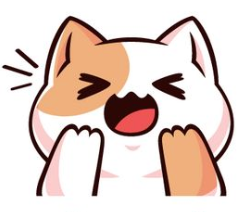
Can't cope right now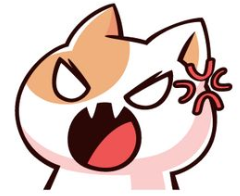
Wound up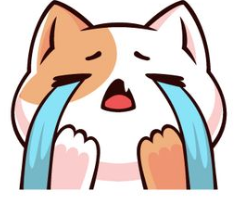
LowPanic tile is double-size, always top, always first — reachable without reading. The other three are one row each. "Just looking" exits with nothing asked.
How are you feeling?
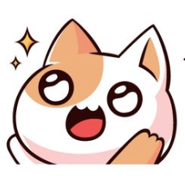
Buzzing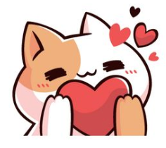
GratefulSix-face version for comparison. Buzzing and Grateful both land in Good things, so they earn a tile only if the entry copy differs. Smaller targets are the cost.
0.0s — startle
no text yet
0.5s — paws lower
no text yet
2.0s — settled
"I'm here. Let's breathe together."
The panda models recovery: it reacts to the face they picked, then visibly comes down and becomes the pacer. No second question — there is one panic path now, and its intensity adapts through pacing rather than through a choice made while panicking.
5 in · 8 out
In through your nose.
5
I'm here. Let's breathe together.
Breathing starts immediately — no instructions to read first. Three counted breaths with the in/out prompt. Reading is the default and Next advances the text; the speaker button top-left switches to voice, which paces itself.
What's happening in your body?
Offered after the first counted breaths, never before — breathing shouldn't wait on a menu. Selecting is possible during an attack; naming a thought isn't. Four sensations, each with its own script. Skip covers the case where it's undifferentiated, which is how it often feels, and goes straight back to the breath.
Your heart is beating fast to move blood to your arms and legs. That's all it's doing.
It feels awful. It isn't hurting you. It slows down on its own.
One explanation per sensation, then straight back into the script. No intensity rating, no "is it worse than last time", and the choice is never logged or compared over time — that would turn normalising into monitoring, which feeds the fear it's meant to settle.
start
panda's paws up, braced
never toothy or gory
"Let's breathe together."
after three breaths
shoulders drop
sensation script
through the softening lines
no longer braced
one line per breath
by Ground
no longer looked at
"Feel your feet on the ground."
The monster is the anxiety made external — not the user's failing, and not something to defeat. It shrinks on breaths completed, not on anything the user has to do well, so it can't be failed. It never vanishes: it ends small and calm beside the panda, because the honest promise is that this becomes manageable, not that it disappears forever. Art stays soft and formless — a scary monster would be an unhelpful thing to show someone mid-attack.
counting stops
This feeling is horrible, but it can't hurt you.
Next is the only way lines advance while reading — nothing moves on its own, so a slow reader never loses a line. With sound on, lines follow the voice one per breath and Next disappears. The pacer keeps breathing either way.
You're doing the best you can.
Nine lines, tap to continue. Words come after arousal drops, not at the peak — comprehension is one of the first things to go.
Feel your feet on the ground.
If you're lying down, feel your back against what's under you.
exits appear on the last line
A sensation to notice, not a task to perform — pressing down is effort, and effort can be failed. Both postures addressed in one screen, so there's nothing to choose. Five lines, tap-paced: Next is the only button while lines remain, and on the last line it gives way to "I feel better" and "It's getting worse" — otherwise two competing calls to action sit on the same screen.
Talk to someone now.
If you're in danger right now, call emergency services.
Panda is absent. No mascot, no warmth, no illustration — real numbers only.
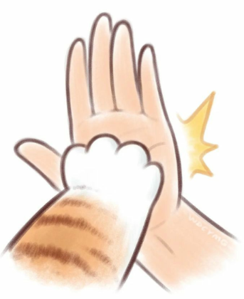
high five, held one beatno confetti, no sound
That passed.
7 minutes. Two mantras, one round of breathing.
You got through it. That's a big deal.
Screen returns to light — the exit from the dark path is the signal it's over. The button pre-fills the first Good things field with "I sat through a hard moment today".
Scribble it out
✕no undo, no save
strokes fade after a few seconds
Scribble as hard as you like. It fades away.
Anger needs discharge, not calming — a slow breathing exercise here reads as being told off. Nothing is kept, which is the point: no artefact, no judgement. The pad fills the screen with no colours, weights or undo to choose between.
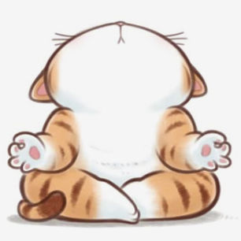
sits down beside you · slow blinktappable anywhere · no timer
I'll stay here with you.
Pet me, or offer me something.
Company, not an activity. Three things to offer, always available — never a hunger meter, never a reminder to feed it. Doing a small kind thing for someone else lifts mood more reliably than being told nice things about yourself.
soft ripple where you touch
answers every tap, no cooldown
Mm.
Stroke follows your finger across the screen
Response is immediate and small. No sound by default, no confetti. The reply is body language, not words — one syllable at most.
plays once, then back to idle
Thank you. Have some too.
Each item gets one line back, and the tea one nudges the user to do the same thing for themselves. "Tell me about it" surfaces only after some interaction — offered once the user has stayed a while, never up front. Free write stays unsaved so it can be honest.
Good. Nothing to do then.
Close this and get on with your day. I'll be here.
The one path that's allowed to end in nothing — an app with homework for every mood becomes another obligation. The ghost button is the only invitation, and it leads into Three good things.
Choose a session
Three sessions. Walking lives here rather than in the panic path — by the time someone has finished the calming exercise they've done enough, and movement at the peak reads as being told to pull yourself together.
cloud → rain → clear
character never reacts
Audio narration, screen can be pocketed
The whole point of the scene is the stillness — no idle fidget animation here. Breath session uses the same pacer motion as the panic path, so it's familiar under stress.
keeps pace, never ahead
no route, no map, no steps
Just listen. You can put your phone away.
Notice the ground under your feet. Then look at what's ahead.
Works with the screen off and headphones in
Audio-first, designed to be listened to rather than watched — nothing on screen is needed once it starts. No distance, pace, route or step count: the moment it measures anything it becomes exercise, and this is attention practice that happens to involve legs.
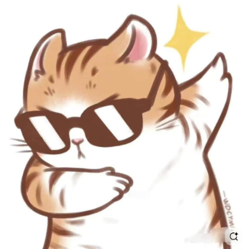
thumbs up, one beatthen back to steady
Complete.
That's four sessions this week.
Shared by both sessions. Hands off to Good things rather than dead-ending.

Today felt
Tap one. That's the whole thing.
HARD
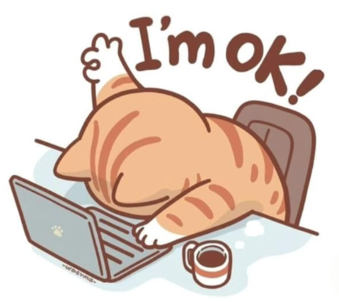
Burned outFLAT
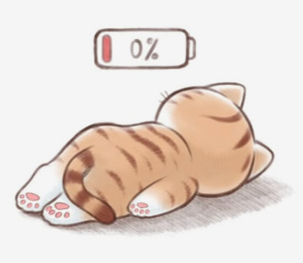
Drained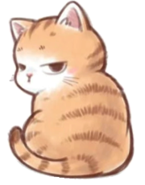
BoringGOOD
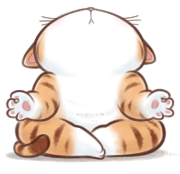
Serene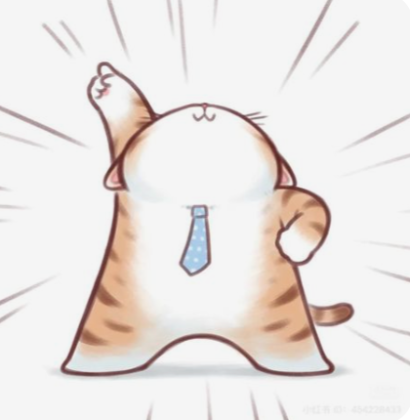
WinningTwo seconds, no typing, done. Tapping a face saves the entry and offers layer 2 — but the entry is already complete, so leaving now costs nothing. Most days will stop here, and that's the point: it has to be possible on the worst day. Eleven faces, grouped Hard / Flat / Good so the eye lands on the right band before reading any label — Couldn't cope stays first, top-left, reachable without reading. The list scrolls; the tab bar stays fixed.
Low
Saved · tap to change
Low days still count as days.
What would have helped?
Nine of the eleven faces share this shape: the panda says one encouraging line, then asks one question, then one field. Never more than one question, and what's written is never summarised or scored back at the user. Burned out and Drained are the exceptions and ask nothing at all — see their own frames.
Couldn't cope
Saved · tap to change
You got through a day that tried to stop you.
What was happening just before?
The only face where the question is about causes, because knowing the run-up is what makes the next one easier to catch. Explicitly optional, and three good things isn't offered here — the panic recap already asked.
Cross
Saved · tap to change
It's okay to be cross. It usually means something needs sorting out.
What set it off?
The panda takes the user's side rather than talking them down. Writing anger is a discharge too, so the scribble pad sits here as the alternative for anyone who doesn't want to put it in words.
Okay
Saved · tap to change
Normal days count too.
What went right?
The quiet middle. No praise for a good day, no fixing for a flat one — just a note that unremarkable days are data too.
Buzzing
Saved · tap to change
Tell me everything.
What's got you going?
The panda is openly happy for the user here — the only place it shows more energy than they do. Worth keeping rare so it means something.
Grateful
Saved · tap to change
That's a good thing to be feeling.
Who or what for?
"Tell them" opens the phone's share sheet with the sentence pre-filled. Gratitude acted on lands better than gratitude logged, and it's the one moment the app points the user outward.
Burned out
Saved · tap to change
slides slowly off the desk
loops, gets sillier
I'm ok!
(I am not ok. Neither of us has to be.)
No question and no button. The one thing to do is tap the laptop: the lid shuts, the panda slides the rest of the way off the desk, and the screen goes quiet. Acting on the scene rather than pressing Continue is the difference between being dismissed and being let off.
Drained
Saved · tap to change
one ear twitches
that's the whole animation
0%. Same.
Nothing needs doing tonight.
Tapping the panda pulls a blanket over it and the battery ticks to 1%. Then the screen settles into the still frame beside this one. The joke is the panda being equally useless, not the user being told to cheer up.
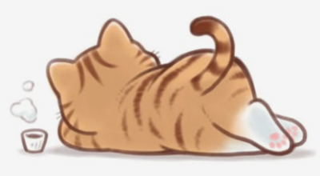
flat out, tea gone coldslow breathing loop, nothing else
no timer, no progress, no prompt
Night then.
Shared ending for both. The screen dims to the dark palette, the entry is already saved, and there is nothing to dismiss or confirm. Tapping leaves the app rather than returning to Home — going back to a dashboard would undo the point of it.
HARD
Couldn't cope — "You got through a day that tried to stop you." → What was happening just before?
Cross — "It's okay to be cross. It usually means something needs sorting out." → What set it off?
Low — "Low days still count as days." → What would have helped?
Burned out — "I'm ok! (I am not ok. Neither of us has to be.)" → no question · panda flops on the laptop
FLAT
Drained — "0%. Same. Nothing needs doing tonight." → no question · panda flat out at 0% battery
Boring — "Boring is fine. Nothing went wrong today." → Anything you'd rather have been doing?
GOOD
Serene — "This is what calm feels like. Worth remembering." → What made it this calm?
Okay — "Normal days count too." → What went right?
Winning — "Look at you. What did you pull off?" → What went your way? · sunglasses thumbs-up
Grateful — "That's a good thing to be feeling." → Who or what for? · "Tell them" opens the share sheet
Buzzing — "Tell me everything." → What's got you going?
Same shape every time: one line from the panda, one question, one field. Burned out and Drained break the pattern deliberately: no question at all, just the panda being equally wrecked and a button that closes the app. Being asked anything is the problem in those two states. Serene asks what caused it — the one place worth collecting evidence, since a calm day the user can explain is repeatable.
Three things that went well
Small things count. One word is fine.
once per entry, nothing louder
When you're anxious, your brain keeps looking for bad things. This gives it good things to find too. Doing it often is what helps, not doing it perfectly.
Its own tab, not a layer of the journal — it's a practice with its own habit, and burying it two taps deep means it rarely happens. The journal records how a day felt; this trains what gets noticed. The explanation says what the practice is for — giving an over-scanning alarm system the evidence it keeps missing — in terms the user can check against their own experience, rather than claiming to rewire anything. The journal's layer 2 still offers a shortcut into it, as do the panic recap and "I want to share my happiness", both of which pre-fill the first field.
never empties or resets
4 entries this week
Each day carries the face it was given. Gaps read as gaps, not failures — no streak counter, no "streak lost" copy. Patterns surface rarely and only when actionable, at most monthly: "Your low days tend to be Sundays", never "you've had 12 bad days".
A week in.
Your notes are only on this phone. An account keeps them safe if you lose it.
Asked once. "Not now" is remembered.
The only account ask in the product, and it's earned by seven days of data.
Try next: "build the picker and the three new paths into the prototype" · "go with the six-face version" · "design the scribble pad properly"